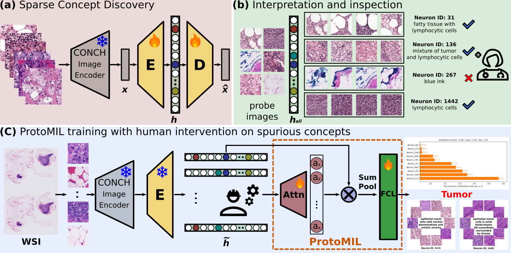

Abstract
Multiple Instance Learning (MIL) methods have succeeded remarkably in histopathology whole slide image (WSI) analysis. However, most MIL models only offer attention-based explanations that do not faithfully capture the model's decision mechanism and do not allow human-model interaction. To address these limitations, we introduce ProtoMIL, an inherently interpretable MIL model for WSI analysis that offers user-friendly explanations and supports human intervention. Our approach employs a sparse autoencoder to discover human-interpretable concepts from the image feature space, which are then used to train ProtoMIL. The model represents predictions as linear combinations of concepts, making the decision process transparent. Furthermore, ProtoMIL allows users to perform model interventions by altering the input concepts. Experiments on two widely used pathology datasets demonstrate that ProtoMIL achieves a classification performance comparable to state-of-the-art MIL models while offering intuitively understandable explanations. Moreover, we demonstrate that our method can eliminate reliance on diagnostically irrelevant information via human intervention, guiding the model toward being right for the right reason.
BibTeX
@article{sun2025prototype,
title = {Prototype-Based Multiple Instance Learning for Gigapixel Whole Slide Image Classification},
author = {Sun, Susu and van Midden, Dominique and Litjens, Geert and Baumgartner, Christian F.},
journal = {arXiv preprint arXiv:2503.08384},
year = {2025},
url = {https://arxiv.org/abs/2503.08384}
}Contact
If you have any questions, feel free to contact Susu Sun at susu.sun@uni-tuebingen.de.